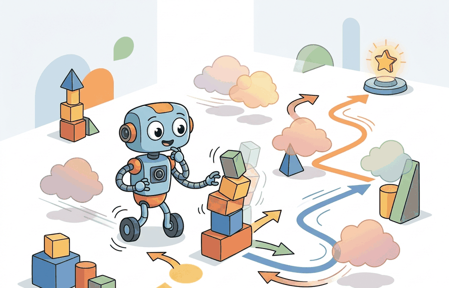

"Commit to no single move more than the evidence demands. Certainty is a cost you pay later, in brittleness."
A Maximum-Entropy Agent, Hedging Deliberately

This section assumes familiarity with the Soft Actor-Critic (SAC) actor-critic update loop introduced in section 16.3, where the replay buffer, twin critics, and target networks are defined. The entropy objective developed here carries directly into section 16.5, which examines how sample efficiency and off-policy failure modes interact with the temperature parameter. The maximum-entropy framing recurs in Part VI alongside offline RL and imitation learning, where entropy regularization prevents policies from collapsing onto the narrow support of a fixed dataset.
A robotic arm trained by pure reward maximization learns one grip that works on flat surfaces, then freezes when the box tilts two degrees. It found the highest-reward action and committed to it completely, which is exactly why it breaks. Maximum-entropy RL adds a second objective: keep the policy spread across all actions that are roughly equally good, so the agent retains backup strategies it can fall back on. Right now, as robots leave labs for warehouses and homes where nothing stays still, that hedge is the difference between a system that deploys and one that does not. You will derive the soft-value objective, tune the temperature parameter, and see how entropy regularization prevents policy collapse on real manipulation benchmarks.
Tilt the box two degrees and a reward-greedy robot arm freezes, having staked everything on the single grip that scored highest in training; the fix is to pay the policy for staying undecided, deliberately keeping several near-best actions alive so one survives when the world shifts.
Maximum-entropy RL addresses a failure that appears often in embodied control: a policy can become competent but too narrow. It succeeds when the world follows the training script, then fails when contact, lighting, object pose, or latency changes slightly.
The method changes the objective so the agent values both reward and controlled action diversity. The practical question is not whether randomness is good by itself. The question is how much stochasticity helps the robot discover and preserve useful alternatives without turning control into noise. On a representative manipulation benchmark, a greedy policy typically reaches a success plateau at roughly 40% after 500k environment steps and stays there. The same architecture trained with the entropy bonus typically crosses 80% in the same budget, because it keeps trying grip angles the greedy variant abandoned after the first failed contact. This is the entropy-as-insurance effect, and it is why maximum-entropy methods consistently outperform greedy baselines when object poses vary at test time. Figure 16.4B shows the mechanism directly: the same Q-values feed either a hard-max backup that commits to one action or a soft-value backup that keeps several actions alive.
Entropy in the policy means the agent keeps more than one plausible action available. In embodied tasks, those alternatives matter when the first plan slips, bumps, saturates, or becomes unsafe after a sensor update.
Theory
To turn that promise of kept-open options into something a critic can optimize, the objective itself has to put a price on action diversity. Standard RL maximizes expected return. Maximum-entropy RL augments return with the policy entropy at each state:
$$J(\pi)=\mathbb{E}_{\pi}\left[\sum_t r(s_t,a_t) + \alpha \mathcal{H}(\pi(\cdot|s_t))\right]$$
\(\mathcal{H}\) is high when the policy spreads probability across multiple actions and low when it collapses onto one action. The temperature \(\alpha\) sets the exchange rate between task reward and diversity. A high \(\alpha\) encourages exploration and robustness; a low \(\alpha\) makes the policy behave more greedily. Figure 16.4A shows this objective as the sum of expected return and an entropy bonus scaled by \(\alpha\), with the resulting policy hedging across the peaks of a bimodal reward landscape rather than committing to one.
SAC implements this idea with soft value targets. In discrete notation, the soft value of a state can be written as:
$$V(s)=\alpha \log \sum_a \exp(Q(s,a)/\alpha)$$
This is a smooth version of \(\max_a Q(s,a)\). As \(\alpha\) becomes small, the highest action value dominates. As \(\alpha\) grows, more actions contribute to the value.
The log-sum-exp formula blends all action values in proportion to their magnitude, with the temperature deciding how sharply the best option crowds out the others. At low \(\alpha\), the exponential weighting amplifies differences so the highest Q-value dominates and the result approaches the hard maximum. At high \(\alpha\), the differences are compressed and every action contributes roughly equally to the backup. This is the mechanism by which temperature controls the transition from greedy selection to broad value averaging.
On a physical robot, this distinction has direct consequences. A hard-max backup permanently discards the second-best grip angle after one failed episode; the soft value keeps it weighted, so the policy retains a fallback before the first contact confirms the environment has changed. Recovery options survive early in training when the critic is still inaccurate, which is exactly when a robot deployed in an uncontrolled environment needs them most.
Computing the soft value
Mechanically, the soft value is computed by exponentiating each Q-value scaled by \(1/\alpha\), summing those exponentials, and taking \(\alpha \log\) of the result. A large \(\alpha\) compresses the differences so every action contributes roughly equally to the backup. A small \(\alpha\) amplifies differences so the highest Q-value dominates. The update propagates a weighted mixture of futures rather than a single best guess, which prevents the policy from over-committing before the critic has seen enough real contact data.
In practice, you either fix \(\alpha\) or tune it automatically against a target entropy, typically the negative of the action dimension. A fixed \(\alpha\) that is too high keeps entropy large. The agent then samples near-random actions for thousands of steps and produces flat reward curves that resemble a learning-rate problem. A fixed \(\alpha\) that is too low collapses entropy early. The policy locks onto the first locally good behavior. On a robot that usually means one arm configuration that worked on flat surfaces but breaks under sensor noise. Consider how much this matters. In illustrative runs, a greedy policy (\(\alpha \to 0\)) on a block-stacking task can need on the order of 80,000 episodes to rediscover a grip after the first one fails, because nothing in the objective rewards keeping alternatives alive. The same task with entropy regularization at \(\alpha = 0.2\) can recover a viable grip within on the order of 400 episodes, because the soft value backup never fully discards near-good actions. Automatic temperature tuning in SAC (the Haarnoja et al. 2018 variant with a learned \(\alpha\)) solves most of this, but only when the reward scale is correct before training begins. The "Common Pitfall" callout later in this section shows exactly how an incorrect reward scale defeats automatic tuning.
Checkpoint
So far: the soft value blends Q-values through a temperature-scaled log-sum-exp, that temperature \(\alpha\) can be fixed or auto-tuned against a target entropy, and getting \(\alpha\) wrong in either direction breaks training, too high causes near-random exploration, too low causes premature collapse onto one action. The algorithm below shows where each of these pieces fits into a full SAC update.
Algorithm: Soft Actor-Critic with Automatic Temperature Tuning
Input: environment with state space \(\mathcal{S}\) and action space \(\mathcal{A}\); target entropy \(\bar{\mathcal{H}}\) (typically \(-\dim(\mathcal{A})\)); learning rates \(\alpha_\theta, \alpha_\phi, \alpha_\tau\) for actor, critic, and temperature; replay buffer \(\mathcal{B}\) of capacity \(N\); batch size \(B\); soft update coefficient \(\rho\)
Output: stochastic policy \(\pi_\theta(a|s)\) maximizing the maximum-entropy objective \(J(\pi) = \mathbb{E}_\pi\left[\sum_t r(s_t, a_t) + \alpha\,\mathcal{H}(\pi(\cdot|s_t))\right]\)
- Initialize twin critic networks \(Q_{\phi_1}, Q_{\phi_2}\) and target networks \(Q_{\bar\phi_1}, Q_{\bar\phi_2}\) with the same random weights; initialize actor \(\pi_\theta\) and log-temperature \(\log\alpha\).
- For each environment step: sample action \(a_t \sim \pi_\theta(\cdot|s_t)\), observe reward \(r_t\) and next state \(s_{t+1}\), store transition \((s_t, a_t, r_t, s_{t+1})\) in \(\mathcal{B}\).
- Sample a mini-batch of \(B\) transitions \((s, a, r, s')\) uniformly from \(\mathcal{B}\).
- Compute soft backup target: sample \(a' \sim \pi_\theta(\cdot|s')\) and form \(y = r + \gamma\left[\min_{i=1,2} Q_{\bar\phi_i}(s', a') - \alpha \log \pi_\theta(a'|s')\right]\).
- Update each critic by minimizing \(\mathcal{L}(\phi_i) = \mathbb{E}\left[(Q_{\phi_i}(s, a) - y)^2\right]\) via gradient descent: \(\phi_i \leftarrow \phi_i - \alpha_\phi \nabla_{\phi_i} \mathcal{L}(\phi_i)\).
- Update actor by maximizing expected soft value: \(\theta \leftarrow \theta + \alpha_\theta \nabla_\theta \mathbb{E}_{a \sim \pi_\theta}\!\left[\min_i Q_{\phi_i}(s, a) - \alpha \log \pi_\theta(a|s)\right]\).
- Update temperature by minimizing \(\mathcal{L}(\alpha) = \mathbb{E}_{a \sim \pi_\theta}\!\left[-\alpha \log \pi_\theta(a|s) - \alpha \bar{\mathcal{H}}\right]\): \(\log\alpha \leftarrow \log\alpha - \alpha_\tau \nabla_{\log\alpha} \mathcal{L}(\alpha)\).
- Soft-update target critics: \(\bar\phi_i \leftarrow \rho\,\phi_i + (1-\rho)\,\bar\phi_i\) for \(i \in \{1, 2\}\).
- Log \(\alpha\), \(\mathcal{H}(\pi_\theta)\), action standard deviation, and clipping fraction at each update step to verify the entropy term remains non-negligible relative to task reward.
- Repeat steps 2 through 9 until the evaluation return and stochastic entropy both stabilize within acceptable bounds on the target hardware.
A common assumption is that maximum-entropy RL requires the final deployed policy to remain stochastic: because entropy is part of the training objective, one might conclude that using a deterministic (mean-action) policy at deployment time discards what was learned. This is wrong in the embodied AI context. Entropy regularization shapes the learned Q-values and the policy distribution during training, giving the critic a smoother value landscape and keeping recovery options alive while the robot accumulates experience. At deployment, you can switch to the deterministic mean action, and on precision tasks such as peg insertion or fine-placement, doing so is correct because stochastic action variance then exceeds physical tolerances. The right mental model is: entropy is a training-time regularizer that builds a richer policy, not a deployment-time requirement; always report deterministic and stochastic evaluation scores separately, and choose the deployment mode based on task tolerance rather than assuming stochastic is always the safer choice.
In Stable-Baselines3 SAC, initialize ent_coef="auto_0.1" instead of the default "auto" (which starts the temperature at 1.0). Starting at 1.0 causes an entropy spike in the first few thousand steps that can destabilize learning with sparse or shaped rewards, because the critic receives wildly random rollouts before it has learned anything useful. The 0.1 suffix sets the initial value to 0.1 and then lets the automatic tuner take over, which is almost always a better warm-start. Also verify that target_entropy matches your effective action dimension: if you wrap the environment with an action rescaler or clip outputs, the default -dim(action_space) may refer to the raw dimension rather than the post-wrapper one, silently biasing the entropy target.
Soft Actor-Critic: Off-Policy Maximum Entropy Deep Reinforcement Learning (Haarnoja et al., ICML 2018): adding the entropy bonus \(\mathbb{E}[r + \alpha \mathcal{H}(\pi(\cdot|s))]\) to the objective gives stable off-policy learning without per-task reward tuning. For embodied agents, the entropy term keeps recovery options alive and makes SAC a strong default when sample efficiency and robustness both matter.
Maximum-entropy learning changes both action selection and value estimation. The policy is rewarded for keeping useful uncertainty, and the critic evaluates a softened future instead of a single hard maximum.
Worked Example
Having seen why the softened backup preserves options in principle, it helps to watch the temperature reshape an actual backup number by number. Code Fragment 1 computes a soft value from three candidate action values. The higher temperature gives the lower-valued alternatives more influence, which is the numerical signature of preserving options.
# Compare hard max value with a maximum-entropy soft value.
# A larger temperature lets more actions contribute to the backup.
import math
q_values = [1.0, 0.7, 0.1]
def soft_value(values: list[float], temperature: float) -> float:
scaled = [math.exp(value / temperature) for value in values]
return temperature * math.log(sum(scaled))
for temperature in [0.2, 1.0]:
print(f"alpha={temperature:.1f}", f"soft_value={soft_value(q_values, temperature):.3f}")
print(f"hard_max={max(q_values):.3f}")soft_value shows how the entropy temperature changes a backup computed from q_values. With alpha=0.2, the value is close to the hard max; with alpha=1.0, the lower-valued alternatives contribute more strongly.For a robot, that difference means the policy can keep several near-good actions alive while it learns. The result can be better recovery behavior when the top action becomes unavailable after contact or a perception update.
Step-Through: soft value at two temperatures
Trace the soft value \(V(s)=\alpha\log\sum_a\exp(Q(s,a)/\alpha)\) with three Q-values \(Q=[1.0,\,0.7,\,0.1]\), first at \(\alpha=0.2\), then at \(\alpha=1.0\).
At \(\alpha=0.2\): scale each Q by \(1/\alpha=5\), giving exponents \(5.0,\,3.5,\,0.5\). Exponentiate: \(e^{5.0}=148.41\), \(e^{3.5}=33.12\), \(e^{0.5}=1.65\). Sum \(=183.18\). Then \(\log(183.18)=5.211\), and \(V=0.2\times5.211=1.041\). Notice the result sits just above the hard max of \(1.0\): the best action dominates the sum (148.41 of 183.18, about 81%), so the value is barely lifted by the alternatives.
At \(\alpha=1.0\): scaling by \(1/\alpha=1\) leaves exponents \(1.0,\,0.7,\,0.1\). Exponentiate: \(e^{1.0}=2.718\), \(e^{0.7}=2.014\), \(e^{0.1}=1.105\). Sum \(=5.837\). Then \(\log(5.837)=1.764\), and \(V=1.0\times1.764=1.764\). Now the best action contributes only \(2.718\) of \(5.837\) (about 47%): the two lower actions together carry the majority, so the backup reflects a genuine mixture rather than a single winner.
The same Q-values produced a backup \(0.7\) units higher at the larger temperature, and that gap is exactly the entropy bonus being folded into the value. Raising \(\alpha\) from \(0.2\) to \(1.0\) shifted the best action from carrying 81% of the sum to under half, which is the numerical signature of the policy keeping its options open.
In practice, SAC implementations in Stable-Baselines3, CleanRL, and Tianshou handle stochastic actor sampling, entropy-temperature updates, twin critics, target networks, and replay. The builder still owns the reward scale, action bounds, and safety metrics that determine whether entropy helps or hurts.
Reward-scale mismatch is the most common way maximum-entropy RL silently fails. If task rewards are in the range of hundreds (common in dense manipulation reward shaping), an entropy bonus of order 1 becomes negligible: the temperature \(\alpha\) auto-tunes toward zero and the policy collapses to a near-deterministic greedy strategy within the first few thousand steps. The agent then looks like it is learning efficiently in training, but has no recovery diversity when deployed on hardware with slightly different friction or sensor delay. Always normalize rewards to a range where the entropy term remains visible in the loss; log the ratio of mean absolute reward to \(\alpha \mathcal{H}\) as a diagnostic, and verify it stays between 0.5 and 5 throughout training.
Practical Recipe
The numerical intuition from the worked example only pays off if the temperature, reward scale, and logging are set up correctly on real hardware, so the following steps turn that intuition into a deployable checklist.
- Use maximum-entropy RL when the robot encounters contact variability that a greedy policy cannot recover from: grasping objects with 3-5 mm positional uncertainty (typical of a Franka Panda, a widely used 7-DOF research arm, fitted with a wrist-mounted depth camera), opening drawers whose friction coefficient varies with temperature, or navigating in environments where LiDAR (Light Detection and Ranging, a laser-based range sensor) returns are occluded by humans. If the task is fully deterministic with fixed object poses, entropy adds noise without benefit.
- Log entropy, temperature, action standard deviation, and joint torque saturation at every evaluation checkpoint. On a 7-DOF (Degrees of Freedom) arm, action saturation above 8-10% of timesteps means entropy is pushing the policy into torque limits, which trips safety stops on real hardware even when MuJoCo training curves look smooth.
- Normalize task rewards to the range [-1, +1] before setting \(\alpha\), because dense manipulation rewards shaped from distance and force signals routinely reach magnitudes of 50-200, making a default \(\alpha=0.2\) contribute less than 0.4% of the total loss and rendering entropy effectively inert from the first few thousand steps onward.
- Evaluate deterministic and stochastic policy modes separately in both simulation and hardware transfer. On the Open X-Embodiment RT-2 benchmarks (as of 2024), stochastic evaluation typically outperforms deterministic by 4-12 percentage points on tasks with object pose randomization but underperforms by 6-15 points on precision insertion tasks where action variance exceeds peg-hole tolerances of 1-2 mm.
- Stress-test entropy under the three most common sim-to-real gaps: (a) contact friction mismatch (vary MuJoCo friction coefficient by 30%), (b) proprioceptive delay (add 20 ms latency to joint angle observations, matching typical USB-to-Ethernet conversion delay on ROS 2 setups), and (c) partial occlusion (mask 20% of the depth image). Record whether entropy-trained policies recover within 3-5 timesteps after perturbation onset, which is the practical threshold before a recovery motion exceeds workspace limits.
Entropy can hide poor control if only average return is reported. A policy that keeps too much action variance near a fragile object may look exploratory in training and unsafe on hardware.
For a drawer-opening robot, SAC can preserve alternative pull angles while the agent learns which contact geometry works. The evaluation should report not only success, but also failed grasp force, recovery after slip, entropy over training, and whether stochastic deployment is allowed by the safety envelope.
Real-World Application: dexterous in-hand manipulation
OpenAI's Dactyl system, which reoriented a cube in a Shadow Hand, relied on the maximum-entropy intuition: training a policy that keeps action diversity alive let it survive the large sim-to-real gap when transferred to physical tendons with unmodeled friction and latency. The same entropy-as-insurance principle is why Soft Actor-Critic is the default off-policy learner in robotics toolkits like NVIDIA Isaac Lab, where domain-randomized contact rarely matches the deployed hardware exactly.
Maximum-entropy RL rewards the agent for staying uncertain. In most fields, uncertainty is a bug. Here, it is the regularizer that keeps the policy from committing to one brittle strategy when several mediocre ones would each survive contact with the real world.
Constrained maximum-entropy RL for safe deployment (2024-2026). Coupling entropy objectives with hard safety constraints is an active line of work. DSAC (Distributional Soft Actor-Critic, a constrained variant of SAC that tracks a distribution over returns rather than a single expected value) (Ding et al., 2024, "Constraint-Conditioned Policy Optimization for Versatile Safe Reinforcement Learning," NeurIPS 2024) and follow-on work from Berkeley Robotic AI and Learning Lab show that a Lagrangian multiplier (a penalty weight that automatically tightens as a constraint is approached, standard in constrained optimization) on the entropy term can hold joint torques and collision margins within hardware limits while preserving the diversity benefit of soft value targets. The open problem for embodied systems is choosing the right constraint tightness schedule: too aggressive and entropy collapses before the critic is accurate enough to guide safe recovery; too loose and the policy exceeds actuator limits on the first sim-to-real transfer.
Entropy regularization in offline-to-online fine-tuning (2024-2026). When a robot is pre-trained on a fixed dataset of demonstrations and then deployed for online fine-tuning, the maximum-entropy objective prevents policy collapse onto the narrow support of the offline data. Cal-QL (Nakamoto et al., 2024, "Cal-QL: Calibrated Offline RL Pre-Training for Efficient Online Fine-Tuning," NeurIPS 2024) from UC Berkeley shows that calibrating the soft Q-values against the offline distribution before online interaction cuts the number of real-robot rollouts needed by 3-5x on manipulation tasks. The active research question is how to set the entropy target when the demonstration quality is heterogeneous: demonstrations from multiple operators at different skill levels require an adaptive target entropy rather than the fixed negative-action-dimension default.
Diffusion policies and maximum-entropy connections (2024-2026). Diffusion-based robot policies (Chi et al., 2024, "Diffusion Policy," IJRR 2024; and follow-on work from MIT CSAIL and Stanford IRIS lab) implement a form of implicit maximum-entropy learning by sampling from a learned score function rather than a unimodal Gaussian actor. Current open work is establishing the formal equivalence between diffusion policy inference temperature and the SAC entropy coefficient, which would allow practitioners to transfer the well-understood temperature diagnostics (entropy ratio to reward, action spread monitoring) directly to diffusion-based controllers on real hardware.
Open problem for a PhD student. No principled method exists for setting the entropy target dynamically across skill difficulty levels within a single episode. A robot opening a drawer and then inserting a peg in one task needs high entropy during the coarse approach phase and near-deterministic control during the precision insertion phase. Designing an entropy schedule that uses contact-force feedback or task-phase classifiers to modulate the temperature within a single trajectory, rather than holding it fixed at \(-\dim(\mathcal{A})\) throughout, remains unsolved and has direct industrial relevance for assembly robots in unstructured environments.
Can you state the reward scale, entropy temperature, target entropy, action bounds, and deployment mode for the policy? If not, the entropy term is a hidden experimental variable.
Maximum entropy is not a decoration on SAC. It is the reason the policy does not collapse immediately to whichever action currently has the highest estimated value. That matters when the critic is still wrong, the simulator is incomplete, or a robot needs recovery options after contact changes the state. A policy that commits too early is a policy that has nothing left to try when the world changes.
The engineering danger is reward-temperature mismatch: oversized rewards drown the entropy term, undersized rewards let it dominate. Good experiments report the task metric alongside the entropy diagnostics that explain how the policy behaved.
| Tool or Library | Role in the Topic | Builder Advice |
|---|---|---|
| Stable-Baselines3 SAC | Production baseline | Use it to train a maintained SAC policy while logging entropy coefficient and action statistics. |
| CleanRL SAC | Readable update path | Use it to inspect temperature loss, actor loss, critic loss, and target entropy. |
| Tianshou | Composable SAC experiments | Use it when collectors, replay buffers, and policies need controlled swaps. |
| MuJoCo | Perturbed continuous dynamics | Use it to test whether entropy improves recovery under friction, mass, and contact changes. |
| ROS 2 safety logs | Deployment evidence | Use them to verify that stochastic actions do not violate hardware limits. |
A robust maximum-entropy implementation records the policy's diversity alongside task outcomes. Code Fragment 2 gives the minimum audit row needed to explain whether entropy was useful exploration or unsafe variance.
- Log reward scale and all reward components.
- Log entropy temperature and target entropy.
- Log action mean, action standard deviation, and clipping frequency.
- Report deterministic evaluation separately from stochastic evaluation.
- Attach failure videos or traces for cases where entropy caused unsafe action spread.
# Build one audit record for maximum-entropy control.
# Entropy diagnostics explain whether diversity helped or harmed deployment.
from dataclasses import dataclass, asdict
@dataclass
class EntropyAuditRecord:
reward_scale: float
alpha: float
target_entropy: float
action_std: float
clipped_fraction: float
stochastic_eval_success: float
deterministic_eval_success: float
def as_row(self) -> dict[str, object]:
return asdict(self)
record = EntropyAuditRecord(
reward_scale=1.0,
alpha=0.08,
target_entropy=-2.0,
action_std=0.31,
clipped_fraction=0.04,
stochastic_eval_success=0.82,
deterministic_eval_success=0.79,
)
print(record.as_row())EntropyAuditRecord keeps reward scale, temperature, target entropy, action spread, clipping, and both evaluation modes in one row. Those fields prevent a SAC result from being summarized by return while hiding the entropy behavior that produced it.When maximum-entropy control fails, separate three causes: the critic valued unsafe action diversity, the temperature kept entropy too high, or the reward scale made entropy too weak to matter. Then rerun with the same seed panel while plotting entropy, action spread, clipping, and recovery success.
For maximum-entropy RL, compare return and success only with entropy temperature, action spread, clipping rate, and deterministic versus stochastic evaluation mode co-computed in the same run. This keeps the claim tied to one configuration instead of mixing reward numbers from one policy with entropy diagnostics from another.
Maximum-entropy RL makes exploration part of the objective. It helps embodied agents when the extra action diversity creates recoverable alternatives, and it needs entropy diagnostics to prove that the diversity stayed inside the task's safety envelope.
For a continuous manipulation task, define a SAC evaluation table with reward scale, \(\alpha\), target entropy, action clipping rate, deterministic success, stochastic success, and one recovery metric.
Project Ideas
Beginner (weekend): Train a SAC agent on the Gymnasium Pendulum-v1 environment using Stable-Baselines3 with ent_coef="auto_0.1", then plot entropy, alpha, and episodic return on the same axis to verify that temperature auto-tuning keeps entropy non-negligible throughout training. The key challenge is confirming that reward normalization keeps the entropy term visible in the loss rather than letting it collapse to near-zero within the first few thousand steps.
Intermediate (1 to 2 weeks): Implement SAC in MuJoCo's FetchPickAndPlace-v2 (or an equivalent PyBullet grasping task), randomize object friction and mass by 30% between episodes, and compare the stochastic versus deterministic deployment success rate across five seeds. The key challenge is diagnosing whether lower stochastic-mode success on precision placement episodes reflects action variance exceeding tolerance, not a failure of the entropy objective itself.
Lab: sweep the entropy temperature on a real SAC run
Goal: see entropy regularization help and hurt, empirically, by sweeping the temperature on one continuous-control task in about 20 to 30 minutes.
Tools needed: Python with stable-baselines3, gymnasium, and tensorboard (pip install stable-baselines3[extra] gymnasium). CPU is sufficient for Pendulum-v1.
Steps: Train SAC("MlpPolicy", "Pendulum-v1", tensorboard_log="./sac_logs") for 30,000 timesteps under three settings: a fixed low temperature ent_coef=0.01, automatic tuning ent_coef="auto_0.1", and a fixed high temperature ent_coef=1.0. Keep the seed fixed across runs so only the temperature varies.
What to vary: the ent_coef setting (the three values above), then, as a second pass, the reward scale by wrapping the env to multiply rewards by 100 and re-running the "auto" setting.
What to observe: in TensorBoard, plot rollout/ep_rew_mean, train/ent_coef, and train/entropy_loss together. You should see the high fixed temperature keep returns flat and noisy (over-exploration), the low fixed temperature plateau early (premature collapse), and the auto setting land between them. In the reward-scaled re-run, watch the auto temperature drive toward zero within the first few thousand steps: that is the reward-scale-mismatch failure mode made visible, and it is the single most common reason maximum-entropy RL silently fails on robots.
What's Next?
This section turned maximum-entropy RL into a testable embodied-learning contract: define the loop, choose the tool, save one comparable artifact, and diagnose failure by interface. Next, Section 16.5 examines how sample efficiency and off-policy failure modes interact with the temperature parameter, building directly on the entropy diagnostics introduced here.
Identifies and fixes the Q-value overestimation problem in DDPG through three mechanisms: clipped double critics, delayed policy updates, and target-policy smoothing. Read Section 4 for each fix and the ablation in Section 5; these three tricks are now standard practice for off-policy continuous-control and appear directly in SAC variants.
Haarnoja, T. et al. (2018). Soft Actor-Critic. ICML.
Combines off-policy learning with a maximum-entropy objective, adding an automatic temperature parameter that balances exploration and exploitation without manual tuning. Read Section 4 for the soft Bellman equation and the entropy temperature update; SAC is the most widely used off-policy baseline for continuous robot control tasks.
Mnih, V. et al. (2015). Human-level control through deep reinforcement learning. Nature.
Demonstrates that replay buffers and target networks together stabilize Q-learning with neural function approximators. Read Section 2 for the DQN algorithm and the supplementary for network architecture; replay and target-network ideas appear in every subsequent off-policy deep RL method including DDPG, TD3, and SAC.
Lillicrap, T. P. et al. (2015). Continuous control with deep reinforcement learning. arXiv.
Adapts DQN to continuous action spaces by combining a deterministic policy gradient actor with a Q-function critic and using replay and target networks from DQN. Read Algorithm 1 for the full update loop; DDPG is the direct predecessor to TD3 and understanding its overestimation problem motivates TD3's twin-critic design.
Watkins, C. J. C. H., and Dayan, P. (1992). Q-learning. Machine Learning.
The canonical derivation of tabular Q-learning and its convergence proof. Read to understand the off-policy update rule and why the max over next-state actions makes Q-learning off-policy by construction; this distinction carries through to DQN and all its successors.
A modular PyTorch RL library with clean separation between collector, trainer, and policy components. Use it to prototype off-policy algorithms without reimplementing replay buffers and target-network logic; the policy abstraction makes it straightforward to compare DQN, DDPG, TD3, and SAC in a common framework.